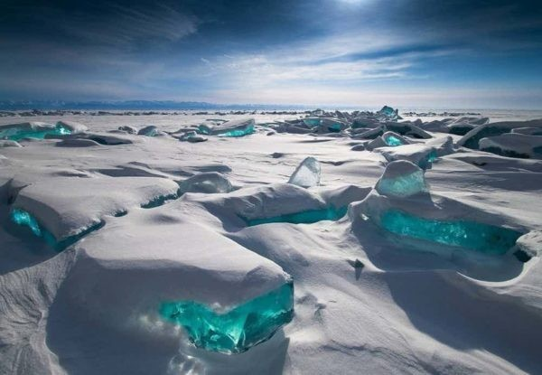
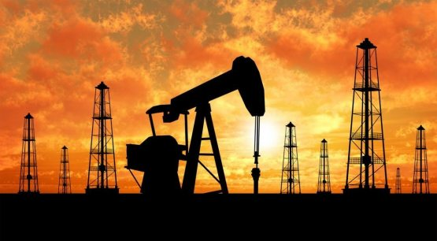
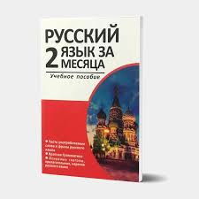
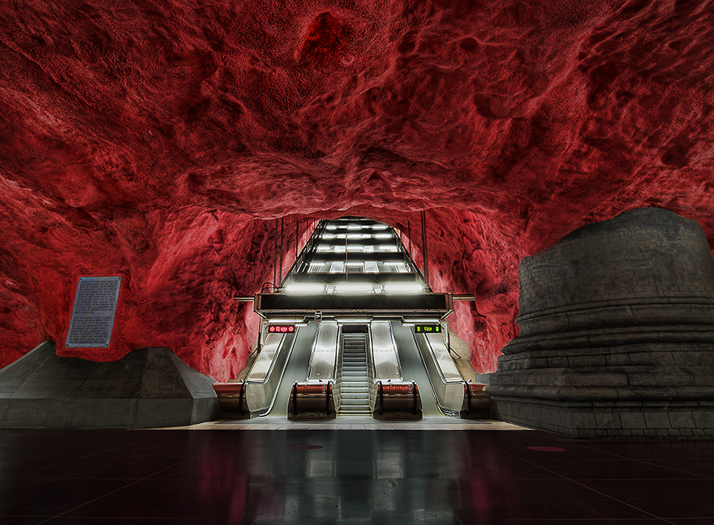

1. Rossiya dunyodagi eng katta davlat
Rossiya hududiy jihatdan dunyodagi eng katta davlat bo'lib, 17 million kvadrat kilometrdan ortiq maydonga ega. Bu davlat ikki qit'ada: Yevropa va Osiyoda joylashgan bo'lib, shimoldan janubga 4,000 km va sharqdan g'arbga 9,000 km cho'zilgan.

2. Moskva Yevropaning eng yirik shahridir
Moskva Yevropadagi eng yirik shaharlardan biri bo'lib, aholisi 12 milliondan ortiq. Bu shahar Rossiyaning siyosiy, iqtisodiy, va madaniy markazi hisoblanadi. Moskva dunyodagi yirik metropolitenlardan biri sanaladi.

3. Rossiya 11 ta vaqt zonasi bo'ylab cho'zilgan
Rossiya dunyodagi eng ko'p vaqt zonalariga ega davlatdir. Mamlakatning sharqiy qismidan g'arbiy qismigacha 11 ta vaqt zonasi mavjud bo'lib, bu Rossiya bo'ylab sayohat qilishda vaqt farqlari sezilarli bo'lishini anglatadi.

4. Moskva mashhur Qizil Maydonga ega
Moskva markazidagi Qizil Maydon dunyodagi eng mashhur maydonlardan biridir. U Kreml bilan bir qatorda joylashgan va ko'plab tarixiy voqealarning guvohi bo'lgan. Bu maydon turistlar orasida juda mashhur.

5. Rossiyada dunyodagi eng sovuq joylar mavjud
Rossiyaning Sibir hududi dunyodagi eng sovuq joylar qatoriga kiradi. Masalan, Yakutsk shahrida qish mavsumida harorat -50°C ga tushishi mumkin. Ushbu hudud odamlarga chidamli hayot kechirishni talab qiladi.

6. Moskva Kreml va St. Vasil sobori bilan mashhur
Moskva Kreml qal'asi va St. Vasil sobori bilan tanilgan. Kreml Rossiya prezidentining rezidentsiyasi bo'lib, mamlakatning siyosiy markazi hisoblanadi. St. Vasil sobori esa o'zining noyob arxitekturasi bilan mashhur.

7. Rossiya uran va gaz zahiralari bo'yicha dunyoda yetakchi
Rossiya energiya resurslariga boy bo'lib, dunyodagi eng katta tabiiy gaz va uran zahiralariga ega. Bu davlat energetik xavfsizlik va resurs eksporti bo'yicha yetakchi o'rinda turadi.

8. Moskva dunyodagi eng qimmat shaharlardan biri
Moskva dunyo bo'ylab eng qimmat shaharlardan biri hisoblanadi. Ko'plab yirik moliyaviy markazlarga ega bo'lgani sababli, bu yerda yashash va ishlash yuqori xarajatlarni talab qiladi.

9. Rossiyaning rasmiy tili rus tili
Rossiyaning rasmiy tili rus tili bo'lib, bu til mamlakatda 144 million odam tomonidan so'zlanadi. Rus tili dunyodagi eng ko'p so'zlashiladigan tillardan biri sanaladi va xalqaro miqyosda ham keng qo'llaniladi.

10. Moskva metrosi dunyodagi eng chiroyli va band tizimlardan biri
Moskva metrosi dunyodagi eng band va chiroyli metrolardan biri hisoblanadi. Har bir bekat o'ziga xos dizaynga ega bo'lib, ba'zilari hatto san'at asarlariga o'xshatib yaratilgan.
